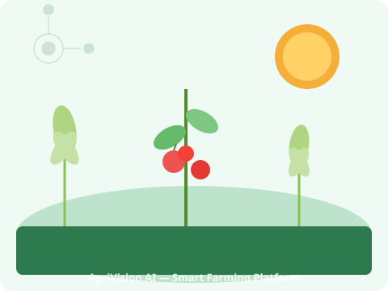

Identify plants, detect diseases, forecast weather, and get personalised crop advisory — all in one platform.

Upload a photo and instantly identify any plant species using AI-powered PlantNet analysis.
Try Now →Detect plant diseases early from leaf images and receive treatment recommendations powered by Gemini AI.
Detect →Get real-time weather and 5-day forecasts with AI-translated farming advice tailored to your crops.
Check Weather →Chat with Gemini 2.5 Flash to get personalised crop management, pest control, and soil health advice.
Ask AI →Plan your planting schedule, manage your crop calendar, and generate AI-optimised growth strategies.
Plan →Search thousands of plants for watering schedules, sunlight needs, and care difficulty ratings.
Explore →